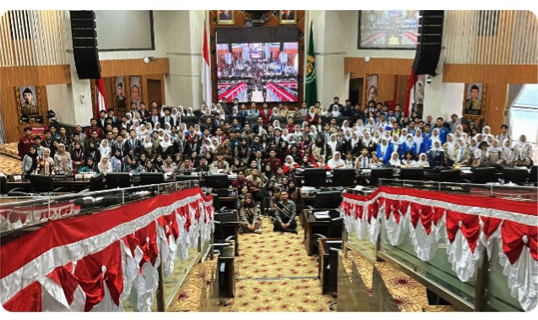

Forum MPK Nasional (FOMNAS) lahir dari tekad luhur para perwakilan Majelis Permusyawaratan Kelas di seluruh Indonesia untuk menyatukan frekuensi, berbagi gagasan, dan memperkuat posisi legislasi siswa di lingkungan sekolah menengah.
Kami percaya bahwa budaya demokrasi yang sehat dan kepemimpinan berintegritas berakar dari pengalaman berorganisasi di bangku sekolah. Melalui FOMNAS, ratusan ribu anggota MPK terkoneksi dalam jaringan suportif untuk saling belajar tata kelola aspirasi dan pengawasan berkeadilan.

"Menyiapkan kader-kader penerus perjuangan bangsa dan pembangunan nasional dengan membekali keterampilan kepemimpinan legislatif, kesehatan jasmani, kreativitas, patriotisme, integritas kepribadian, dan kebajikan."
Melibatkan siswa secara aktif dalam proses kehidupan berbangsa dan bernegara melalui pemahaman tata kelola demokrasi yang bermartabat.
Membina siswa untuk berorganisasi secara kritis, profesional, dan solutif guna membangun karakter kepemimpinan transformatif.
Meningkatkan kualitas lembaga eksekutif dan legislatif di sekolah melalui mekanisme pengawasan, evaluasi, dan sinergi yang transparan.
Mengawal penegakan tata tertib sekolah yang berkeadilan, inklusif, dan menjunjung tinggi hak serta kewajiban setiap peserta didik.
Menampung, mengadvokasi, dan menyalurkan aspirasi seluruh siswa Indonesia agar didengar serta dipertimbangkan oleh pemangku kebijakan.
Menjunjung kejujuran, objektivitas, dan rasa keadilan dalam mengemban amanah aspirasi para siswa.
Menghargai keragaman sudut pandang dan merajut persatuan pelajar dari seluruh pelosok Nusantara.
Mengadopsi pendekatan digital dan kreatif dalam memecahkan problematika organisasi siswa di era modern.